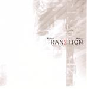

| Artist: | Richard Pinhas |
| Title: | Tranzition |
| Label: | Cuneiform Rune 186 |
| Length(s): | 62 minutes |
| Year(s) of release: | 2004 |
| Month of review: | [05/2004] |
| 1) | Dextro | 10.50 |
| 2) | Moumoune Girl (a Song For) | 10.33 |
| 3) | Tranzition | 9.37 |
| 4) | Aboulafia Blues | 6.48 |
| 5) | Metatron (an Introduction To) | 24.25 |
The samples of Tranzition occur here by kind permission of Cuneiform Records.
So, what else is there to be found? Opener Dextro has percussion a lot more persistent than your basic drum rhythm, whilst Moumoune Girl has a lot of spoken fragments in front, joined by the percussion. This percussion was not present on more recent work by Pinhas.
Tranzition on the one hand reminds a bit of Vangelis, or Schulze even, as it starts. As it progresses, though, the guitar loops, now less Frippian, and percussion take over.
Closer Metatron is a more traditional Pinhas solo track: stripped of the percussion this is purely guitar loop.